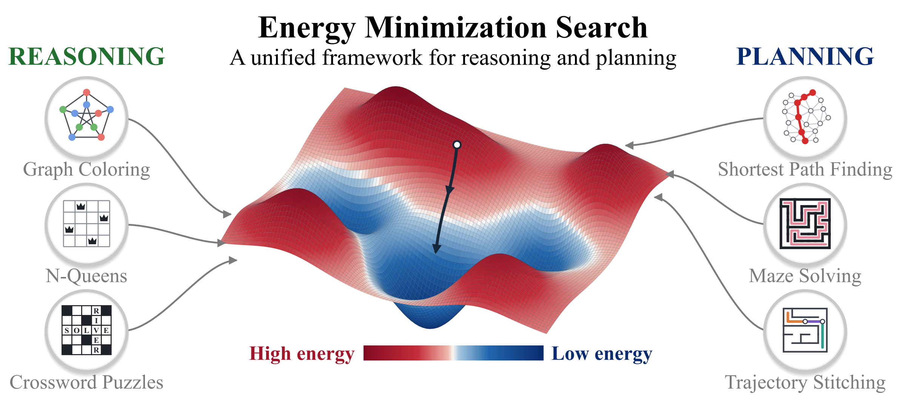
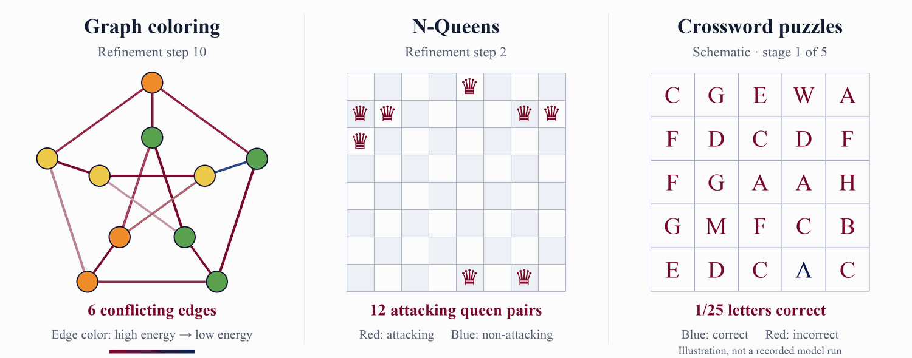

Unifying Reasoning and Planning through Energy Minimization
TL;DR
Energy Minimization Search (EMS) learns a fixed energy landscape for each task and solves problems by searching it. The same training framework supports reasoning and planning, with additional inference compute allocated to more refinement steps or more candidate solutions. On benchmarks, EMS matches or outperforms the evaluated diffusion-based EBM baselines in solution quality with substantially fewer model evaluations.
Abstract
Neural networks often struggle to solve reasoning and planning problems more complex than those encountered during training. Energy-based models offer a natural approach to this challenge by learning objectives that can be optimized with additional computation. However, existing methods rely on specialized training and inference procedures, from differentiating through iterative optimization to annealing across noise-dependent energy landscapes. We introduce Energy Minimization Search (EMS), a unified framework for reasoning and planning through a shared training objective and time-invariant energy minimization. EMS combines Equilibrium Matching with contrastive supervision to learn an energy function for each task, using the energy values to evaluate candidates and energy gradients to guide refinement. At inference time, we search on this fixed landscape, allocating additional computation to more refinement steps or candidate solutions. Across graph coloring, N-Queens, 3-SAT, crosswords, path finding, and maze navigation, EMS achieves competitive or improved solution quality relative to baselines, with substantially fewer function evaluations than the diffusion-based EBM reasoning baselines.

Reasoning and planning share a search problem
Reasoning and planning both require finding solutions that satisfy problem conditions. Prior diffusion-based EBMs refine candidates across a sequence of noise-conditioned energy landscapes, which can require many model evaluations at inference. EMS instead learns a fixed energy function for each task: energy values score candidates, while gradients guide their refinement. The same training framework supports both domains, and the search method and compute budget can change without retraining.
Reasoning

We evaluate EMS on graph coloring, N-Queens, 3-SAT, and crosswords, composing learned local energies to search for complete solutions. Across these tasks, EMS achieves competitive or improved solution quality with substantially fewer model evaluations than the evaluated diffusion-based EBM baselines.